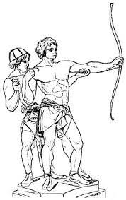
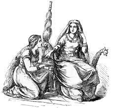
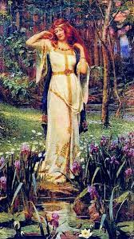
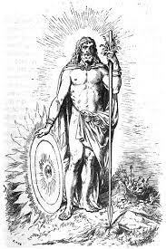

Höðr
En la mitología nórdica, Höðr era un dios ciego, hermano de Baldr. Mató involuntariamente a su hermano y murió a manos de Vali, hijo de Odín. Según lo relatado en las Eddas el dios Baldr tenía pesadillas en donde presagiaba su muerte y su madre, la diosa Frigg recorrió el mundo haciéndole jurar a todas las cosas que jamás dañarían a su hijo. Loki supo de esto y se enfureció, fue a hablar con Frigg disfrazado y ésta le mencionó que no había considerado necesario hacer jurar al muérdago, por considerarlo inofensivo. Loki al saber esto hizo un dardo utilizando una rama de muérdago y guio a Höðr para que se lo arrojase como una broma, matando así a Baldr. En otra versión diferente del mito relatado en Gesta Danorum, no se hace mención a Loki y Baldr es muerto por Höðr de una puñalada.
 Más información
Más información
Fulla
En la mitología nórdica, Fulla es una divinidad femenina. Era una de las tres criadas de Frigg, juntos con Gna y Hlin, otros Æsir. Su nombre proviene del término fullr que significa completo, personificaba la abundancia y conseguía que las mujeres quedaran embarzadas. Según algunas autoridades era su hermana. A ella Frigg le confiaba su estuche de joyas. Era la encargada del atavío de su señora. Tenía el privilegio de ponerle sus zapatos de oro, le atendía en todas partes y era su confidente. A menudo le aconsejaba sobre la mejor manera de ayudar a los mortales que pedían la ayuda de Frigg.

Más información
Freya
Freya es una diosa de la mitología nórdica y germánica, de la cual se preservaron numerosos relatos que la involucran o la describen. Debido a que las fuentes mejor documentadas de esta tradición religiosa fueron transmitidas y, en muchos casos, escritas más de siglo y medio más tarde, su verdadero rol, las prácticas paganas y su culto son inciertos. En las Eddas, Freyja es descrita como la diosa del amor, la belleza y la fertilidad. La gente la invocaba para obtener felicidad en el amor, asistir en los partos y para tener buenas estaciones. Freyja también era asociada con la guerra, la muerte, la magia, la profecía y la riqueza.

Más información
Balder
Balder en el ámbito de la mitología nórdica y germana, es el dios de la paz, la luz y el perdón, y el segundo hijo de Odín. También es citado como Baeldaeg en algunas fuentes protohistóricas, que se refiere a un antiguo rey escandinavo del siglo III. En el siglo xii, los relatos daneses de Sajón Gramático y otros cronistas nórdicos registraron una versión evemerista de la historia. La Edda poética, compilada en el siglo xiii en Islandia pero basada en poemas en nórdico antiguo mucho más antiguos, y la Edda prosaica contienen numerosas referencias a la muerte de Balder, interpretada como una gran tragedia para los Æsir y una de las señales precursoras del Ragnarök.

Más información